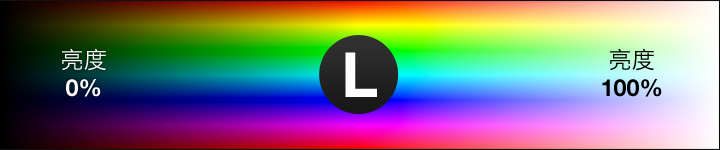

颜色¶
在网页中可以用以下方法来规定 CSS 中的颜色，不同颜色的表示法只是为了便于我们运用和理解，他们之间大多可以相互转换。
- 颜色常量
- 十六进制颜色值 (HEX)
- RGB 颜色
- RGBA 颜色
- HSL 颜色
- HSLA 颜色
颜色常量¶
我们最习惯的便是用英语单词来表示颜色，比如"red"、"blue"、"white"，在使用和阅读的过程中，颜色常量是最方便的一种方式。
一些常见的颜色的常量有aqua、black、blue、fuchsia、gray、green、lime、maroon、navy、olive、purple、red、silver、teal、white、yellow。
在JS中，颜色常量用一个字符串来表示，所以表示绿色要用字符串"green"来表示。颜色常量字符串不区分大小写，"Green"、"green"和"GREEN"都是合理的颜色字符串常量，不过为了规范起见，我们建议大家全部使用小写。
实例：绘制一个红色的矩形
rectangle(10, 10, 200, 100, "red");
这里，函数rectangle中最后一个参数即表示颜色常量。一般情况下，如有这个颜色常量JS不支持，那么等同于使用了黑色效果。如果你在使用的过程中发现图形变为黑色了，那么很有可能是单词拼写错误导致的。
十六进制颜色值 HEX¶
随着显示屏的发展，目前大部分显示屏都已经支持几万以上（65535种）的颜色，我们的词汇已经无法表达出来所有的颜色。
十六进制颜色是这样规定的：#RRGGBB，其中的 RR（红色）、GG（绿色）、BB（蓝色）十六进制整数规定了颜色的成分。所有值必须介于 0 与 FF 之间。
举例说，#0000ff 值显示为蓝色，这是因为蓝色成分被设置为最高值（ff），而其他成分被设置为 0。
RGB值¶
如果用放大镜看显示器的屏幕，会发现屏幕的每个点都是由3个颜色组成，分别是
- Red, 红色
- Green，绿色
- Blue，蓝色
而这3个颜色的首字母组合，即RGB，这也是RGB值的由来。在RGB值的组成中，每一个数字分布代表了每个颜色的强弱，0代表关闭，255代表最高。
有了这3个基本的颜色，按照亮度的不同，就以组成各种个样的颜色。一些常见颜色的RGB值。
| 颜色 | RGB值 | |
|---|---|---|
| 红色 Red | RGB(255, 0, 0) | |
| 黄色 Yellow | RGB(255,255,0) | 红色光和绿色光组成了黄色光 |
| 橙色 Orange | RGB(255, 165, 0) | 红色光和黄色光组成了橙色光 |
光线组合和色彩组合
注意，上面提到的颜色组合，都是对应光线的组合，色彩的组合和光线组合的结果是不一样的。不同的光线组合在一起成为了白色，而不同色彩混在一起，只会变成一片灰色
颜色RGB表示法
RGB(red, green, blue);
- red: 红色的值，从0~255，数值越大，红色光值越强
- green: 绿色的值，从0~255，数值越大，绿色光值越强
- blue: 蓝色的值，从0~255，数值越大，蓝色光值越强
HEX颜色值和RGB值表示法，除了进制上的不同，其他方面是相同的的
RGBA值¶
RGBA 颜色值得到以下浏览器的支持：IE9+、Firefox 3+、Chrome、Safari 以及 Opera 10+。
RGBA 颜色值是 RGB 颜色值的扩展，带有一个 alpha 通道 - 它规定了对象的不透明度。
RGBA 颜色值是这样规定的：rgba(red, green, blue, alpha)。alpha 参数是介于 0.0（完全透明）与 1.0（完全不透明）的数字。
rect.fillStyle = "rgba(255, 255, 0, 0,5)";
前三位对应的是RGB值，第四位即透明度值
颜色RGBA表示法
RGBA(red, green, blue, alpha);
- red: 红色的值，从0~255，数值越大，红色光值越强
- green: 绿色的值，从0~255，数值越大，绿色光值越强
- blue: 蓝色的值，从0~255，数值越大，蓝色光值越强
- alpha: 透明度，浮点数，从0~1，0为全透明
HEX的透明度
HEX颜色表示法，用第7-8位来代表颜色的透明度。如#FF880000表示全透明，而#FF880080则表示半透明
HSL 颜色值¶
HSL同样使用了3个分量来描述色彩，与RGB使用的三色光不同，HSL色彩的表述方式是：H(hue)色相，S(saturation)饱和度，以及L(lightness)亮度。听起来一样复杂？稍后你就会发现，与“反人类”的RGB模型相比，HSL是多么的友好。
HSL的H(hue)分量，代表的是人眼所能感知的颜色范围，这些颜色分布在一个平面的色相环上，取值范围是0°到360°的圆心角，每个角度可以代表一种颜色。色相值的意义在于，我们可以在不改变光感的情况下，通过旋转色相环来改变颜色。在实际应用中，我们需要记住色相环上的六大主色，用作基本参照：360°/0°红、60°黄、120°绿、180°青、240°蓝、300°洋红，它们在色相环上按照60°圆心角的间隔排列，如下图：
HSL(360, 1, 0.5); // 红色

HSL的S(saturation)分量，指的是色彩的饱和度，它用0%至100%的值描述了相同色相、明度下色彩纯度的变化。数值越大，颜色中的灰色越少，颜色越鲜艳，呈现一种从理性(灰度)到感性(纯色)的变化，如下图

HSL的L(lightness)分量，指的是色彩的明度，作用是控制色彩的明暗变化。它同样使用了0%至100%的取值范围。数值越小，色彩越暗，越接近于黑色；数值越大，色彩越亮，越接近于白色。
HSL和RGB的比较¶
HSL和RGB都是颜色的表示法，他们表现出来的颜色是相同的。
在使用HSL调色的过程中，我们并不需要打开拾色器，也不需要了解复杂的色光混合原理，这是一个自然的、感性的、易于理解的过程。
我们对色彩的认识往往是这样的：“这是什么颜色？深浅如何？明暗如何？”，这种认识是基于人类的主体感官而形成的，并不是基于反射光的物理性质。与RGB色彩模型相比，HSL色彩模型对色彩的表述方式非常友好，非常符合人类对色彩的感知习惯。
HSL色彩模型诞生于上个世纪，已经在很多领域被广泛应用。但不同的色彩模型有着不同的适用场景，就GUI设计领域来说，对HSL色彩模型的合理应用能让色彩处理的工作更加人性化，有助于建立和谐的人机交互关系，提升产品体验。当你在RGB的异度空间中苦苦挣扎的时候，不妨换一种思维方式。也许HSL就是为你解决问题的关键。
HSLA¶
HSLA 颜色 HSLA 颜色值得到以下浏览器的支持：IE9+、Firefox 3+、Chrome、Safari 以及 Opera 10+。
HSLA 颜色值是 HSL 颜色值的扩展，带有一个 alpha 通道 - 它规定了对象的不透明度。
HSLA 颜色值是这样规定的：hsla(hue, saturation, lightness, alpha)，其中的 alpha 参数定义不透明度。alpha 参数是介于 0.0（完全透明）与 1.0（完全不透明）的数字。
颜色常量速查¶
| AliceBlue | AntiqueWhite | Aqua | Aquamarine | Azure | Beige | Bisque | Black |
| BlanchedAlmond | Blue | BlueViolet | Brown |
| BurlyWood | CadetBlue | Chartreuse | Chocolate |
| Coral | CornflowerBlue | Cornsilk | Crimson |
| Cyan | DarkBlue | DarkCyan | DarkGoldenRod |
| DarkGray | DarkGreen | DarkKhaki | DarkMagenta |
| DarkOliveGreen | Darkorange | DarkOrchid | DarkRed |
| DarkSalmon | DarkSeaGreen | DarkSlateBlue | DarkSlateGray |
| DarkTurquoise | DarkViolet | DeepPink | DeepSkyBlue |
| DimGray | DodgerBlue | Feldspar | FireBrick |
| FloralWhite | ForestGreen | Fuchsia | Gainsboro |
| GhostWhite | Gold | GoldenRod | Gray |
| Green | GreenYellow | HoneyDew | HotPink |
| IndianRed | Indigo | Ivory | Khaki |
| Lavender | LavenderBlush | LawnGreen | LemonChiffon |
| LightBlue | LightCoral | LightCyan | LightGoldenRodYellow |
| LightGrey | LightGreen | LightPink | LightSalmon |
| LightSeaGreen | LightSkyBlue | LightSlateBlue | LightSlateGray |
| LightSteelBlue | LightYellow | Lime | LimeGreen |
| Linen | Magenta | Maroon | MediumAquaMarine |
| MediumBlue | MediumOrchid | MediumPurple | MediumSeaGreen |
| MediumSlateBlue | MediumSpringGreen | MediumTurquoise | MediumVioletRed |
| MidnightBlue | MintCream | MistyRose | Moccasin |
| NavajoWhite | Navy | OldLace | Olive |
| OliveDrab | Orange | OrangeRed | Orchid |
| PaleGoldenRod | PaleGreen | PaleTurquoise | PaleVioletRed |
| PapayaWhip | PeachPuff | Peru | Pink |
| Plum | PowderBlue | Purple | Red |
| RosyBrown | RoyalBlue | SaddleBrown | Salmon |
| SandyBrown | SeaGreen | SeaShell | Sienna |
| Silver | SkyBlue | SlateBlue | SlateGray |
| Snow | SpringGreen | SteelBlue | Tan |
| Teal | Thistle | Tomato | Turquoise |
| Violet | VioletRed | Wheat | White |
| WhiteSmoke | Yellow | YellowGreen |